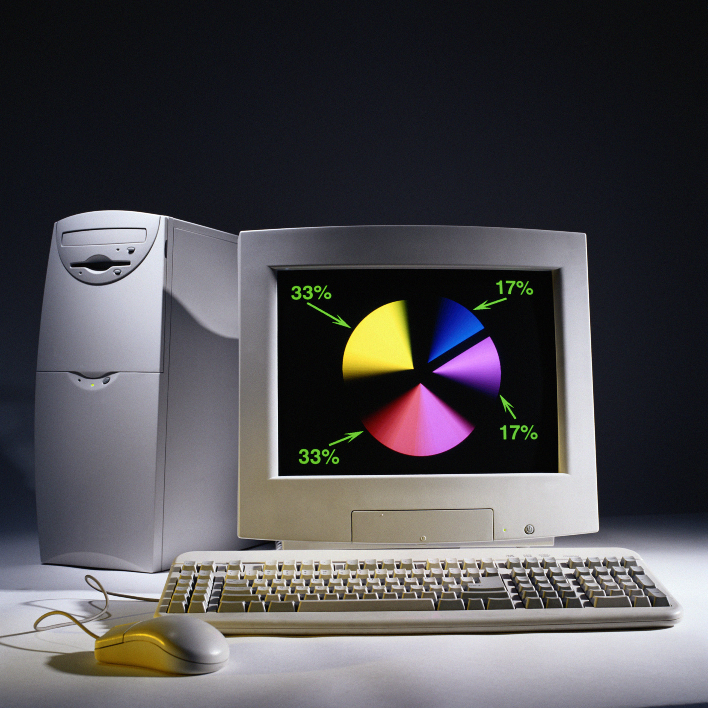

Персональный компьютер состоит из следующих обяательных компонентов:
Строится по модульному принципу, что позволяет легко изменить конфигурацию компьютера увеличить объем оперативной памяти, заменить видеокарту, увеличить емкость винчестера (принцип открытой архитектуры). Все компоненты системного блока (жесткий диск, дисководы, центральный процессор) находятся внутри корпуса, защищающего их от механических повреждений и обеспечивающего необходимый тепловой режим. Элементы управления и индикаторы находятся на передней панели системного блока Сетевые разъемы, разъемы для подключения периферийных устройств и вентилятор блока питания расположены на задней панели системного блока.
В начало документаПредназначен для вывода информации в текстовом и графическом режимах В стационарных ПК используются мониторы на базе электронной лучевой трубки. Изображение формируется из отдельных точек (пикселов)
В начало документа